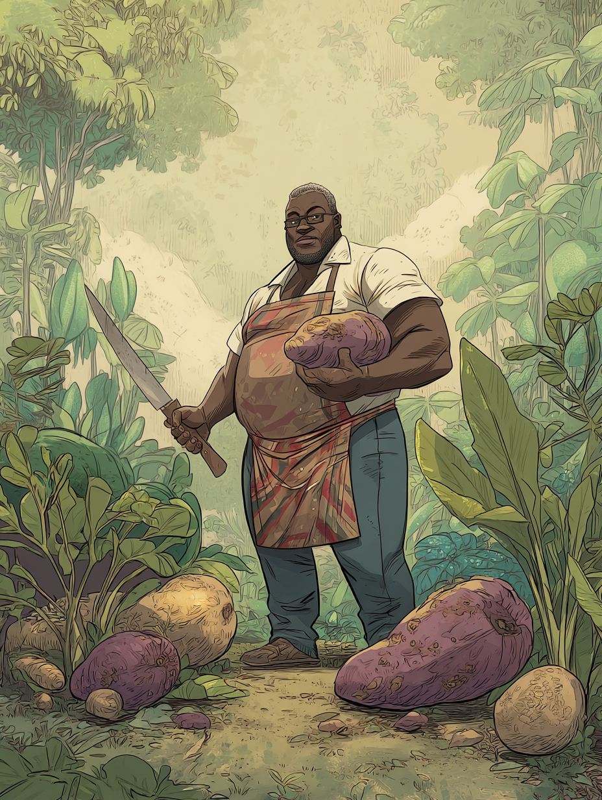
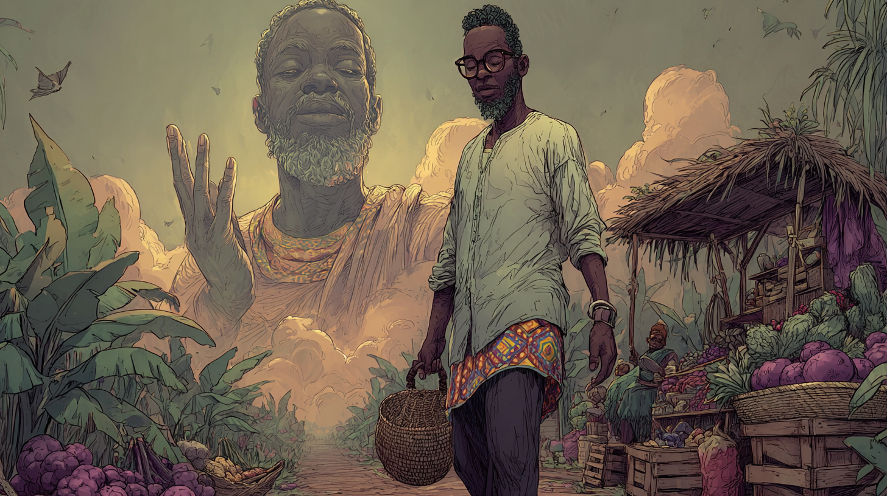

Babatunde Ọlayiwọla — "Babs"

Identity
- Name
- Babatunde Ọlayiwọla
- Called
- Babs
- Home
- the village
- Trade
- Community chef, herbalist, gardener
- Wife
- Ayiri (witch, of some renown)
- Wealth
- Working stiff
- Concept
- Long the community chef of his village, Babs grows his own herbs and yams and has trained several young men and women in his trade.
The List
Every story that ever happened to Babs only happened because of this scrap of paper.
Market List
— from my wife. Don't come home without ALL of it.
- turnips
- hibiscus
- saffron milk cap mushrooms
- calabash gourds
- beeswax
- hawthorne
- fumitory
- chalk
- hazelnuts ↳ but only UNTAINTED ones now
- pipestone
- cockatrice eggs (out of season!!)
- fly agaric
I haven't told him. He'd worry, and worry isn't going to help him cook. — H.
The Sheet
Attributes
Skills
Combat
Schticks & Trade-Tools
- ⬩ Lucky You When you run out of Fortune, roll a die. On a 1 or a 2, regain all your spent Fortune. (Babs has the swingiest luck of anyone alive. The accidental curse may have something to do with it.)
- ⬩ Improvised Weapon Mastery Gain +1 Martial Arts when fighting with an improvised weapon found at the scene. After 3 successful attacks, the bonus fades — unless you describe yourself picking up and using a different improvised weapon (shot cost 1).
- ⬩ Accidental Awesome After you fail an Attack Check with an improvised weapon, add a free Fortune die to your next check or Dodge.
In practice, Babs's arsenal is whatever happens to be within reach: turnips, durians, frying pans (still hitched to the backpack, on the first try), ladles, ladles-against-shields, runt avocados loaded onto crossbow bolts, paralytic mushroom paste he ground for someone else, a hammer slammed into a ring-hook to release a counterweight, a roll of fabric tipped over a friend to roll up an attacker, a head-butt that mostly stuns himself. He is dangerous in a way that nobody — including him — sees coming.
The Wife, & The Quiet Curse
Ayiri Ọlayiwọla, witch of some renown
Babs's wife is, by his own gentle telling, a remarkable woman — herbalist, witch, the one who runs most things. She is a known quantity in the wider witches' clade (and known by name, at least, to Hattie).On the day of his most recent trip to market, she handed him the list and said, with the kind of tiredness only spouses know: don't come back until you have everything. She did not mean it the way it landed. Strong witches do not always know when a sentence becomes a binding.
Babs does not know. The road does. The list does. The dice do.
Notable Tales from the Road
As told around campfires, with details adjusted for whoever's listening.
The Toll at the Tavern Bridge
The caravan from Pestra was crossing the old stone bridge when eight bandits stepped out and asked two crowns a head, and also all of your paper. Babs, who had only just been showing a turnip to a stranger's alpaca, began carefully counting copper out of the bag at his neck — twelve fils to the deca, eight deca to the crown, carry the four. He never got to deliver it.
The alpaca breathed fire. Daggers came from somewhere in Scarlet's bodice. The kettle began spewing fog. A celery stalk was fired from a crossbow. Babs, mid-stoop, dropped his coins, gathered them up, threw them at the bandit's second who tumbled backwards into a raspberry bush, and called after him cheerfully: "You missed a couple!"
Then a mutated squirrel with glowing-green hazelnuts came down out of the trees, and a duck with a tail of weeds and water — and lightning melted around it — and Babs, whose turnip had now been stabbed many times by a confused bandit, swung a frying pan still attached to his backpack. The pan made the trip, but Babs went with it.
"I think this is two crowns!" — Babs, throwing coins at a man who had just tried to rob him, and whose colleague had just been killed.
The bandit, fished from the raspberry bushes, was paid and sent on his way.
Yams Accepted at the Chonky Dragon
In Marleth, a city of perhaps ten thousand and buildings three storeys high, Babs walked his cart around the back of the inn and knocked on the kitchen door. Hambert had assumed he would be politely turned away. The chef came over, looked at the mushrooms, the fowl, the herbs, listened to Babs sketch out a recipe, and arranged a cot off the kitchen. The yam-based economy, it turns out, has its embassies.
Lord Abrams, swathed in beige in a beige-cushioned room with one minstrel and one clam, did not have cockatrice eggs but did know merchants who did. He also briefed the party on a prophecy, three trials, a temple to a martial god named Ingrin sealed for fourteen hundred years, and the inconvenient detail that assassins were entering the residence as they spoke. Babs, who had stripped naked under his ceremonial robe because no one had said not to, exited through the side door without his clothes.
Then, the dye-vat brawl. Travis cut a rope and dropped a ream of fabric into a cauldron, splashing dye across the mooks. Babs cued Travis to a counterweighted hammer-trick that sent red dye flooding sideways across the floor. He also tried to use a rolled-up fabric as a see-saw to launch Travis, and instead sank to his waist in cloth.
It worked anyway. Most things did.
The Honored Guest at the Stable Door
At a farm-inn on the road, a witch named Hattie was interrogating two of Bargio the Bandit King's stooges behind the barn. The proprietor came running, panicked, saying there was a monster, twenty feet tall, by the stable. Babs took charge: "Don't panic. I think I know how to lure it away. Do you have a rack of ribs?"
The cook brought ribs. Babs took the platter, advised everyone to stay inside, and walked alone around the corner of the stable, where he found Hattie, and behind her, looming and clawed, Lawrence. Babs went immediately prostrate, laid the ribs in the dirt, and offered them to the spirit. The spirit said "Oh boy!" and took them to her pen, and turned back into Lady Marshmallow.
Babs would continue to leave offerings of food at Lady Marshmallow's stall for many weeks afterward. He believed, with great sincerity, that he had appeased a powerful local spirit. The party let him believe it. Lady Marshmallow asked, by way of preference, for NO TURNIPS.
"Good thing you appeased the monster with those ribs! I don't think we'll be seeing it anytime soon." — Hattie, in a deliberate stage-voice.
A Pillow, A Bunk Bed, A Misunderstanding
The night the ninjas came, Babs woke up sleepwalking — pillow in hand, standing outside Hattie and Scarlet's door, having scored a critical success at a thing he hadn't meant to do. He knocked. He asked if everything was alright. He was invited in. He charged at the ninja Jasmine with the pillow held in front of him, taking up the whole hallway with his frame, intending to push her out the window. She flipped over him instead.
The bed had been broken. Travis received a vision (a 30, a critical) of how to build a foldable, transportable bunk bed with an integrated massage feature, and he and Babs spent the rest of the night assembling it from the bed-pieces and pulled-up floorboards. During this, four more ninjas appeared in the hall. Babs led them downstairs to look for the scarves, opened the door at the bottom, and they all saw the bodies and Lawrence at once. He looked at the ninjas' faces. "You see it as well." The ninjas left.
A fourth ninja was found ransacking Scarlet's bag while Travis worked. Babs called over: "Hey, what are you doing!?" Travis answered, "Building the bed." Babs said, "Not you. That guy." The ninja said, "...helping?" Babs told him he had the wrong bed and pointed him to the stairs. The bunk bed, when finished, slept three in great comfort.
Ribs for Amula
Deep in the Endless Forest, when the sap-stumps had been driven off and a great cobra-like creature with a hood of human arms descended onto their branch, Babs took the rack of ribs out and started cooking. The proper preparation, he explained, took fourteen hours. The meat needed to be dry-aged.
Amula waited. They spoke of fallen realms, and gods who took pity, and a witch named Legandra long dead, and gardening, and in-betweeners, and the softness of alpaca wool — sheared on the spot, with Babs guiding the shears. Babs asked Amula about children. Amula asked Babs the same. He said he had none of his own, but had trained many of the village's.
When the ribs were ready, Amula ate them following Lawrence's lead, and gifted them six seed-pods of the sap of endurance — better than tapping, since the sap loses its potency in air. Amula's finger was lost to one of Scarlet's gifted knives during a curious test; Hattie reattached it. They were guided back to the boundary as friends.
The Stranger's Deer and the Riga Approach
Outside Riga territory — the clan of voluntary amputees with sword-arm sockets, who would test the party's martial worth — they fought a deer that should not have been a deer. Fire moved around it. Ice slipped off it. Knives grazed; bolts ricocheted. Babs kept fetching the durian they kept throwing into its mouth and missing. A Riga guard appeared and, in a single jump impossibly high, cut its legs off mid-stride and crumpled the thing to the ground.
The guard's stump went necrotic almost at once — a wound that should not have done that. Babs cleaned it, cut away the dead flesh, and the man lived. The guard, by Riga custom, would not discuss what had happened. Babs did not press.
"My God, why aren't you dead yet?" — Lawrence, holding the burning thing down with both claws.
The Temple, the Shield, and the Choice Not Made
In the Temple of Ingrin, sealed fourteen hundred years, the party retrieved the dead god's relics: a sword, a shield, sandals, a saddle, belts, knives, and a quiver. Babs took the shield. He did not take a binding. The binding was the thing that would have made him a martial god equal to the others — and when the moment came, he simply did not put it on.
He went into the final fight with a shield, a ladle, and his cleaver. He banged the ladle against the shield to draw attention. He skipped the shield like a flat stone across a wave of in-betweeners. He shield-edged a raccoon-thing that withered, and missed a squirrel-thing with the ladle. He picked up a tree, on the advice of a god running beside him, and tried to use it as a club. He hit the ground instead.
The Day the Gods Died
The prince Hambert had been recruiting for was killed early. The thing the prophecy had not warned them about was hundred-feet-tall and indescribable, and there were three of them, and they were eating gods. Lingan, god of Law and Order, fought beside them with a stream picked up like a whip. Drachus the harvest god — known locally as Gracus — did not survive the day. Neither did most of the others.
Hattie circled the largest with what could not possibly have been enough material in her pouches, and banished it. Scarlet stabbed one in its eye-organ. Travis built a bow out of a riverbank and shot trees from it. Babs jammed a potato into the mouth of one of the lesser gods, where it grew vines and held the thing shut. When the last one fell, the survivors stood in a circle in the wreckage of a campsite, covered in god's blood, and were informed by the only god left standing — Bragana, trickster, possibly pregnant — that some of those positions were now open.
The Company He Kept
What Came After
When Bragana asked, Babs was not ready for the conversation. Then he said: I'm going to grow food and make good food. The portfolio of Drachus — the dead harvest god, called Gracus in some regions — had just become available. It was an excellent fit. He had, after all, bathed in god's blood. The change was already underway.
The first thing he did was find a way to manifest at a size that would not terrify the man he had been picking up and dragging around. The second was go home.
Ayiri clocked it quickly. They never quite said it aloud — they play-acted normalcy for the rest of the village — but she knew, and he knew she knew. While she lived, he stayed. The village's harvests became phenomenal. People came from further and further afield. It became a regional hub for agriculture, for cuisine, for that particular kind of cultural exchange that happens only when the food is good enough to keep travelers another night.
After she died, he picked up and started walking. He took the dishes of one place and mashed them up with the dishes of the next, and for years afterward, the regions through which he passed would notice that their harvests were unusually generous. He sent Hattie semi-regular gift baskets. He visited.
He never quite finished the list. The list had stopped mattering. But he kept it, folded, in a pocket somewhere — and on certain quiet evenings, when no one was looking, he would take it out, smooth it down, and read it through.
